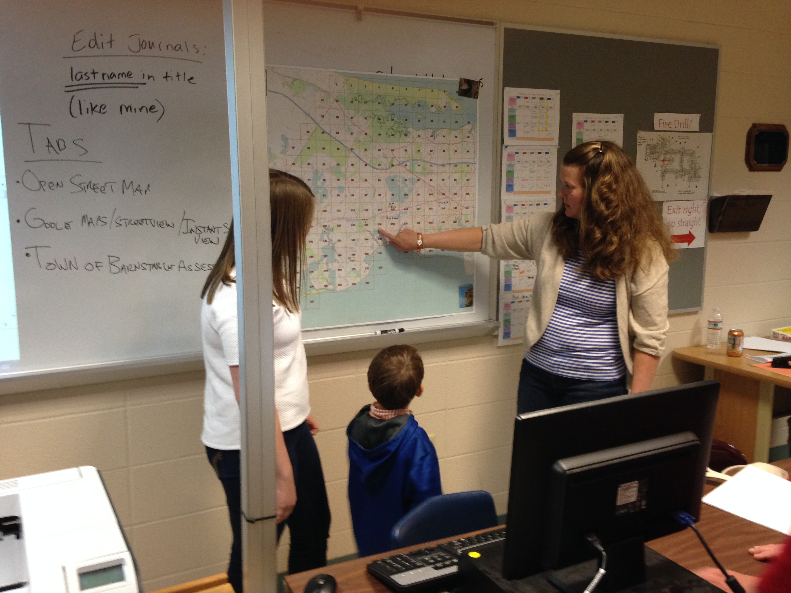
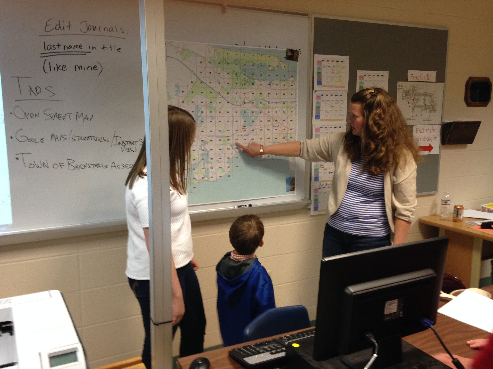

Backstory
In the United States, AP Geography is offered during high school students’ freshman year. As explained by The College Board [1], since it’s introduction in 2001, the growth of the number of students taking the course has been one of the fastest of all AP course offerings to high school students across the United States. A similar growth pattern has taken place in the number of contributors to the OpenStreetMap (OSM) since it’s birth and, in the United States specifically, since the 1st State of the Map U.S. (SOTMUS) Conference in 2010.
Shawn Goulet, a GIS Analyst with the Cape Cod Commission made an introduction to OSM presentation to the staff of the Social Studies department of Barnstable Public Schools in the Fall of 2013 and was bolstered following Shawn’s attendance at SOTMUS 2014 in Washington, D.C. Hilary Mueller, the AP Geography teacher at Barnstable High School, and Virginia Turner, the Social Studies Curriculum Coordinator for grades 6-12 in Barnstable Public Schools enthusiastically welcomed Shawn to work with them on working with the students of the AP sections on editing the OSM throughout the school year. This collaboration with Hilary and her students has continued over the past 2 school years.
Additionally, over the past year, Celeste Reynolds, the AP Geography teacher at Mashpee High School has expressed interest in adding OSM editing to Mashpee’s AP Geography sections. Towareds that end, Shawn has been working with a Mashpee High School senior who went through the AP Geography program and assists Celeste with her current sections, to develop a plan in hopes that Celeste can begin adding OSM editing to the curriculum for the 2015-2016 school year.
The Mapping Task
On Cape Cod, TeachOSM mapping began in the Fall of 2013. Hilary and Shawn agreed that the simplest approach to track students’ contributions to the OSM was to grid the specific town and assign grids to students to begin working on specific areas within the town The grids are generated in GIS software and the number and/or size of the grids is whatever the teacher and Shawn agree is appropriate depending on different variables such as the number of students, the number of sections offered and others that is variable annually. At this point, the students are introduced to OSM and Field Papers [2] throughout the course of the school year. Throughout the course of the school year, the students are tasked with continuously editing the OSM map features within their assigned grids. In addition, there is a map features theme which tasks the students with editing map features that fall under the topics covered in the various sections of the course at the time each section is being covered within their town or another geographic area where they have great knowledge of map features on the ground. If the teacher chooses, students work with the teacher and Shawn to develop a project surrounding OSM and possibly the use of a geoprocessing software.
For Mashpee, the OSM outline for integration with the course will be completed before the end of Spring 2015. Looking forward, Celeste wishes to commence OSM editing in a similar fashion as described above in Mashpee during the 2015-2016 school year.
Our Workflow
The workflow of students’ contribution to the OSM is described above. To track the students’ progress, the students are required to document their contributions in a journal entering information such as beginning location, ending location, and a screen shot(s) of their edits from their account page at the end of each editing session. For now, this journal is maintained in a Google Doc file that is shared between the student and the teacher. Thus far, we have found that this provides a sufficient framework for the students to establish their independent workflows and the teacher to track the student’s contributions. The student is to be assigned additional grids in the town as each is deemed completed to the best of their ability by the student. Also, the editing of map features under each course section changes everytime the course moves to a new section. This component provides a direct connection to the course curriculum and it allows students to map features not necessarily within their town of which they have great knowledge and care. Finally, the course project is open to a discussion between the teacher and Shawn.
Issues
The largest challenge to this point for all parties has been the coordination of schedules and time during work and school hours. TeachOSM is time-consuming. There is a lot of material that is mandated for the teachers and students to cover in the AP Geography sections not including the integration of OSM contributions. TeachOSM sessions have to take place during the school day due to the many after school commitments that the teachers and students may have. As a result, that provides many challenges including the need for long periods (if avalailable) to provide sufficient time for edits and issues resolution. Additionally, school cancellations due to weather events put the teachers and students behind in their course schedule, which in turn pushes TeachOSM meetings further back on everyone’s schedule and the TeachOSM component loses momentum. Towards this end, we have found that coordination, flexibility and patience is extremely important. Also, repitition of the editing process with students is necessary at each TeachOSM meeting due to the students’ becoming overwhelmed from not necessarily actively contribuitng to OSM on a regular basis outside of the school day.
What We’ve Learned
TeachOSM has been a lot of fun for everyone involved. The teachers and students enjoy contributing to OSM. It is productive and students are learning a new way to think, new areas of their town they may never have visited and are gaining practical skills that are applied to work in many positions in today’s workforce. The independent thinking nature of OSM editing in a relatively free-form structure brings the students outside of their comfort zone that they typically learn within. This is valuable. Today’s professionals in many fields may need to go outside of their everyday working environment from time to time to conduct business and be able to adapt to whatever is necessary for them to do their jobs. This is a skill that is only improved through experience. Gaining this experience early on in life will only prove more worthwhile with time.
When given the opportunity to work with students, time management is extremely important to being productive. OSM editing is also valuable both to the AP Geography course and to the students’ futures. The students can easily relate to the map features and they can see their work being integrated in products they actively use such as Craigslist, MapQuest, Pintrest and others. This process is a continuous work in progress and flexibility is key due to the uncertainty of dynamics out of everyone’s control as previously described. Regardless, OSM integration is most certainly valuable for high school-aged students to be given the opportunity. Towards this end, we commend the teachers that give us the opportunity to introduce OSM to their students. It is much appreciated.
Contact Information
Shawn Goulet
shawndotgouletatgmaildotcom
[@Shawn_Goulet] (https://twitter.com/Shawn_Goulet)
[1] [The College Board - AP Geography] (http://apcentral.collegeboard.com/apc/members/courses/teachers_corner/220797.html)
[2] Field Papers